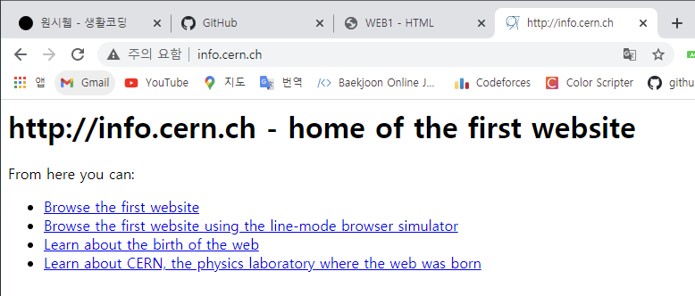

p는 단락을 나누는데에 사용되는 태그입니다!
br은 new line, 줄바꿈 태그입니다!
style ="margin-top:40px;" 이건 css 코드인데 이해는 가능! 암기는 X!
오늘 내용중 가장 기억에 남는 말 : 검색엔진에게 선택되지 않는 WEB은 실질적으로 없는 것이나 마찬가지이다. 즉, WEB을 화려하고 멋지게 만드는 것보다 더 중요한 것은 어찌보면 검색엔진에게 선택되게 만드는 것이다.
unsplash.com -> 공공이미지, 저작권 없는 이미지

태그가 태그, 즉 이름만으로 부족할 때 속성(Attribute)를 통해 보조한다.
ol : ordered list ul : unordered list Parent Tag has a Child tag
meta charset = "utf-8" -> 이 태그는 웹 브라우저에게 utf-8로 문서를 읽으라고 알려주는 것임!
내 깃허브 : 링크 주소
오늘 들은 멋있는 말 : NASA가 인류의 망원경이라면, 강입자연구소는 인류의 현미경이다.

위의 사진은 Web의 메소포타미아와 같은, Web을 처음 만든 팀 버너스가 처음으로 주소를 부여한 website
아래의 동영상은 2020-2학기 Adventure Design강의에서 우리조가 최종 결과물을 만들기 위해 어떤 방식으로 영상을 구성할지에 대해 각자 한번씩 예제를 만들어보자
라고 해서 만든 동영상으로 정말 추억의 동영상입니다!
당연히 이 영상은 최종결과물과 전혀 상관이 없는 영상입니다^^
방문자들과 상호작용이 불가능한 단점을 보완하는 댓글 기능은 HTML로는 불가능하다.
but 그러나! 원래라면 내가 구현하는건 불가능에 가깝지만 남들이 만든 기능을 한번 추가해보자!